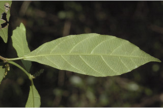
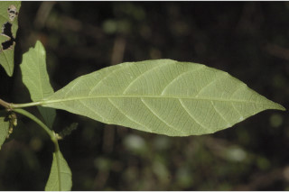
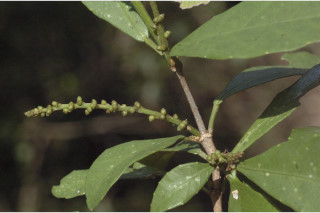
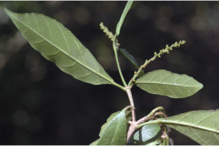
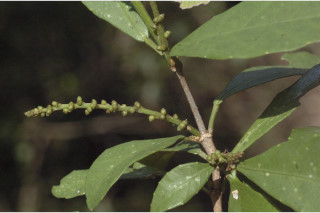
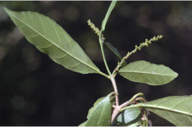

Trees up to 5 m tall.
5 ಮೀ. ಎತ್ತರದವರೆಗೆ ಬೆಳೆಯುವ ಮರಗಳು.
5 മീറ്റര് വരെ ഉയരമുളള മരങ്ങള്.
மரங்கள் 5 மீ. உயரம் வரை வளரக்கூடியது.
Branchlets subterete, glabrous, lenticellate.
ಕಿರುಕೊಂಬೆಗಳು ಉಪದುಂಡಾಕಾರದಲ್ಲಿದ್ದು ರೋಮರಹಿತವಾಗಿರುತ್ತವೆ ಮತ್ತು ವಾಯುವಿನಿಮಯ ಬೆಂಡುರಂಧ್ರ ಸಮೇತವಾಗಿರುತ್ತವೆ.
ശ്വസന രന്ധ്രങ്ങളുളള, അരോമിലമായ, ഏതാണ്ട് ഉരുണ്ട ഉപശാഖകള്.
சிறிய நுனிக்கிளைகள் குறுக்குவெட்டுத் தோற்றத்தில் வளையமானது, உரோமங்களற்றது, லெண்டிசெல் கொண்டது.
Leaves simple with opposite, decussate, unequal pairs; stipules caducous; petiole 0.5 to 1 cm long, canaliculate, swollen at both ends; lamina 5.5-16 x 2.7-4.5 cm (variable) rhombic-elliptic to oblanceolate, narrowed at both ends, apex acute to acuminate, base cuneate, margin entire to sinuate-dentate, resinous yellow glandular beneath; midrib slightly raised above; secondary_nerves ca. 7 pairs; tertiary_nerves obliquely_percurrent.
ಎಲೆಗಳು ಸರಳವಾಗಿದ್ದು ಅಭಿಮುಖ – ಕತ್ತರಿಯಾಕಾರದ ಜೋಡನಾ ವ್ಯವಸ್ತೆಯಲ್ಲಿದ್ದು ಅಸಮ ಜೋಡಿಗಳನ್ನೊಳಗೊಂಡಿರುತ್ತವೆ; ಕಾವಿನೆಲೆಗಳು ಉದುರಿಹೋಗುತ್ತವೆ; ತೊಟ್ಟುಗಳು 0.5 ರಿಂದ 1 ಸೆಂ.ಮೀ.ಉದ್ದವಿದ್ದು ಕಾಲುವೆಗೆರೆ ಸಮೇತವಾಗಿರುತ್ತವೆ ಮತ್ತು ಎರಡೂ ತುದಿಯಲ್ಲಿ ಊದಿಕೊಂಡಿರುತ್ತವೆ; ಪತ್ರಗಳು 5.5 -16 X 2.7 – 4.5 ಸೆಂ. ಮೀ. ಗಾತ್ರದಲ್ಲಿದ್ದು, ಸಂಕುಚಿತವಾದ ವಜ್ರ-ಅಂಡವೃತ್ತದಿಂದ ಬುಗುರಿ-ಭರ್ಜಿಯವರೆಗಿನ ಆಕಾರ ಹೊಂದಿರುತ್ತವೆ; ಪತ್ರಗಳ ಬುಡ ಮತ್ತು ತುದಿ ಸಂಕುಚಿತವಾಗಿರುತ್ತವೆ, ತುದಿ ಚೂಪಾಗಿರುವುದರಿಂದ ಕ್ರಮೇಣ ಚೂಪಾಗುವ ಮಾದರಿಯಲ್ಲಿದ್ದು ಬುಡ ಬೆಣೆಯಾಕಾರದಲ್ಲಿರುತ್ತದೆ;ಅಂಚು ನಯಯಾಗಿರುವುದರಿಂದ ಹಿಡಿದು ವಂಕಿಯ ರೀತಿಯ ದಂತಿತವರೆಗಿನ ಮಾದರಿ ಹೊಂದಿರುತ್ತದೆ; ಪತ್ರದ ತಳಭಾಗ ಹಳದಿ ಬಣ್ಣದ ಅಂಟು ರಸ ಗ್ರಂಥಿಗಳ ಸಮೇತ ಇರುತ್ತವೆ;ಮಧ್ಯನಾಳ ಪತ್ರದ ಮೇಲ್ಭಾಗದಲ್ಲಿ ಸ್ವಲ್ಪಮಟ್ಟಿಗೆ ಮೇಲೆದ್ದಿರುತ್ತದೆ; ಎರಡನೇ ದರ್ಜೆಯ ನಾಳಗಳು ಅಂದಾಜು 7 ಜೋಡಿಗಳಿರುತ್ತವೆ; ಮೂರನೇ ದರ್ಜೆಯ ನಾಳಗಳು ಓರೆಯಾಗಿದ್ದು ಎಲೆ ದಿಂಡಿಗೆ ಅಡ್ಡವಾಗಿ ಕೂಡುವಂತವು.
ലഘുവായ ഇലകള്, സമ്മുഖ ഡെക്കുസേറ്റ് ക്രമത്തില്, അസമ ജോഡികളായുണ്ടാകുന്നു; അനുപര്ണ്ണങ്ങള് എളുപ്പം കൊഴിഞ്ഞ് വീഴുന്നവയാണ്; ചാലുളളതും രണ്ടറ്റവും വീര്ത്തതുമായ ഇലഞെട്ടിന് 0.5 സെ.മീ മുതല് 1 സെ.മീ വരെ നീളം; പത്രഫലകത്തിന് 5.5 സെ.മീ മുതല് 16 സെ.മീ വരെ നീളവും 2.7 സെ.മീ മുതല് 4.5 സെ.മീ വരെ വീതിയും, ആകൃതി ദീര്ഘചതുര - ദീര്ഘവൃത്താകാരംതൊട്ട് അപകുന്താകാരം വരെ പലവിധത്തിലാവാം, രണ്ടറ്റവും നേര്ത്തിരിക്കുന്നു, പത്രാഗ്രം നിശിതംതൊട്ട് ദീര്ഘാഗ്രം വരെയാകാം, പത്രാധാരം ആപ്പാകാരത്തിലാണ്, അരികുകള് അവിഭജിതം തൊട്ട് സിനുവേറ്റ് ദന്തിതമാണ്, കീഴെ കൊഴുത്ത മഞ്ഞസ്രവമുളള ഗന്ഥികള് നിറഞ്ഞതാണ്; മുഖ്യസിര മുകളില് അല്പം ഉയര്ന്നതാണ്; ഏതാണ്ട് 7 ജോഡി ദ്വിതീയ ഞരമ്പുകള്; തൃതീയ ഞരമ്പുകള് ചരിഞ്ഞ പെര്കറന്റ് വിധത്തിലാണ്.
இலைகள் தனித்தவை, எதிரடுக்கமானவை, குறுக்குமறுக்கமானவை, எதிரே அமைந்த ஜோடி இலைகள் சமமற்றவை; இலையடிச்செதில் எளிதில் உதிரக்கூடியவை; இலைக்காம்பு 0.5-1 செ.மீ. நீளமானது, குறுக்குவெட்டுத் தோற்றத்தில் கேனாலிகுலேட், காம்பின் இருமுனைகளும் உப்பியவை; இலை அலகு 5.5-16 x 2.7-4.5 செ.மீ., வடிவத்தில் வேறுபாடுகள் நிறைந்தவை, சாய்ந்த சதுரம்-நீள்வட்டம் முதல் தலைகீழ் ஈட்டி வடிவானது, அலகின் இருமுனைகளும் குறுகியது, அலகின் நுனி கூரியது முதல் அதிக்கூரியது, அலகின் தளம் ஆப்பு வடிவானது, அலகின் விளிம்பு முழுமையானது முதல் பிளவுகளுடையது-பற்களுடையது, ரெசின் சுரக்ககூடிய மஞ்சள் நிறமான சுரப்பிகளை அலகின் கீழ்பரப்பில் கொண்டவை; மையநரம்பு அலகின் மேற்புறத்தில் அலகின் பரப்பைவிட உயர்ந்தது; இரண்டாம் நிலை நரம்புகள் 7 ஜோடிகள்; மூன்றாம் நிலை நரம்புகள் தளம் நோக்கிய பெர்க்கரண்ட்.
Flowers unisexual, in axillary spikes.
ಹೂಗಳು ಏಕಲಿಂಗಿಗಳಾಗಿರುತ್ತವೆ ಮತ್ತು ಅಕ್ಷಾಕಂಕುಳಿನಲ್ಲಿನ ಕದಿರುಮಂಜರಿಯಲ್ಲಿರುತ್ತವೆ.
കക്ഷ്യസ്പൈക്കുകളിലുണ്ടാകുന്ന - പൂക്കള് ഏകലിംഗികളാണ്.
மலர்கள் ஓர்பாலானவை, இலைக்கோணங்களில் அமைந்த ஸ்பைக்.
Capsule, 3 cocci, sparsely yellow glandular and muricate; seeds 1 per cell.
ಸಂಪುಟ ಫಲಗಳು 3 ಮರಿಫಲಗಳನ್ನು ಹೊಂದಿದ್ದು ವಿರಳವಾಗಿ ಹಳದಿ ಬಣ್ಣದ ಅಂಟು ರಸ ಗ್ರಂಥಿಗಳ ಸಮೇತ ಇರುತ್ತವೆ ಮತ್ತು ಗಡುಸಾದ ತರಕಲು ಗುಬುಟುಗಳ ಸಮೇತವಿರುತ್ತವೆ.ಪ್ರತಿ ಮರಿಫಲದಲ್ಲಿ ಒಂದು ಬೀಜವಿರುತ್ತದೆ.
ഓരോഅറയിലും ഓരോ വിത്തുവീതമുളള കായ, ദൂരെദൂരെയായി മഞ്ഞഗ്രന്ഥികളും ചെറുമുളളുകളുമുളള, 3 അറകളുളള കാപ്സ്യൂള് ആണ്.
வெடிகனி (கேப்சூல்), 3 உருளை வடிவங்கள் (காக்கை) ஒன்றாக சேர்ந்தது போன்ற அமைப்பு, ஆங்காங்கே மஞ்சள் நிறமான சுரப்பிகளுடையது மற்றும் மூரிகேட்; விதைகள் அறைக்கு ஒன்றாக அமைந்தது.
 



 


